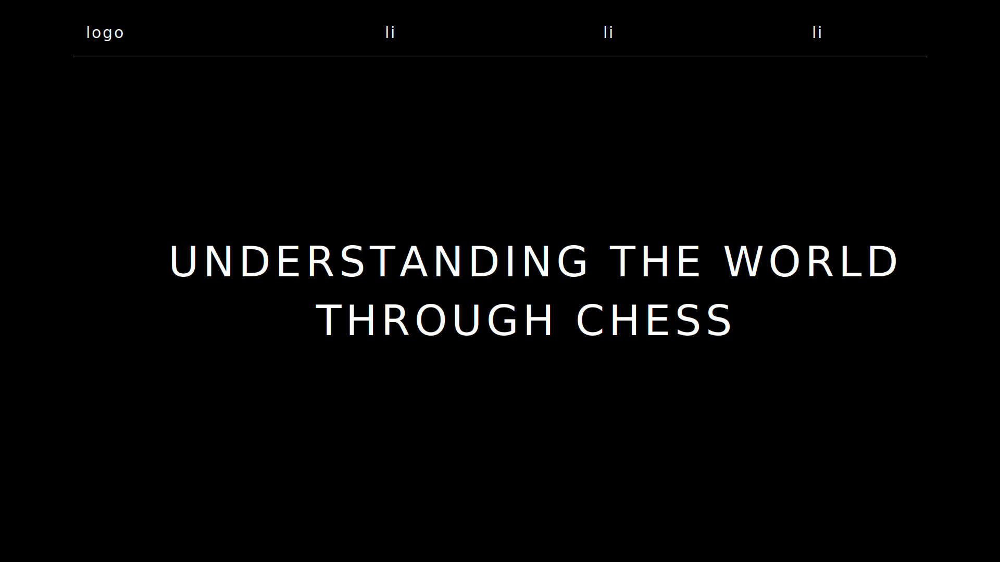
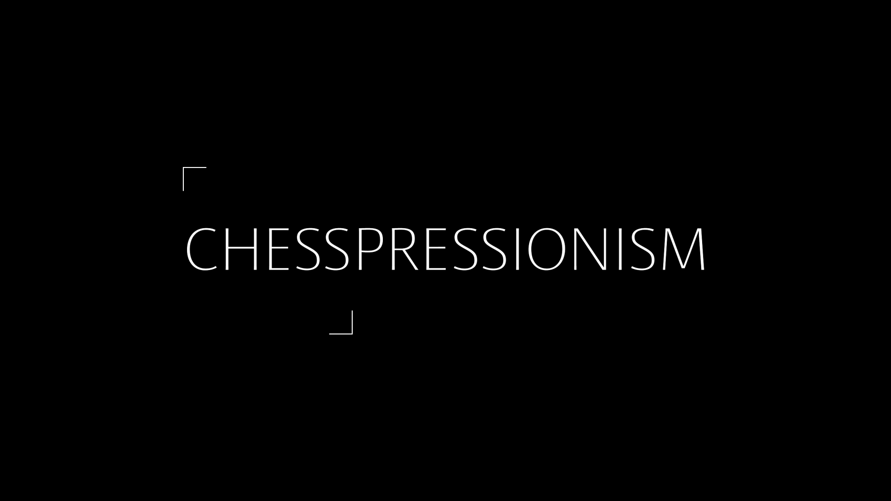

CHESSPRESSIONISM
For my interest-based website, I chose to create a minimalistic chess blog.

SCIENCE
The name of the blog - CHESSPRESSIONISM - is a thought-provoking word that allowed me to write about many different topics.
For the logo, I used the gestalt law of closure, and the users that took the 3-second-test noticed immediately that the website was about chess.


Speaking of chess, the website itself is a gigantic responsive chess board.